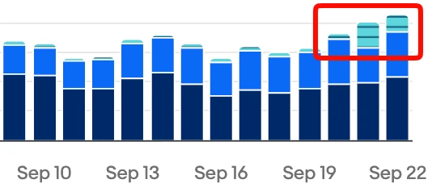
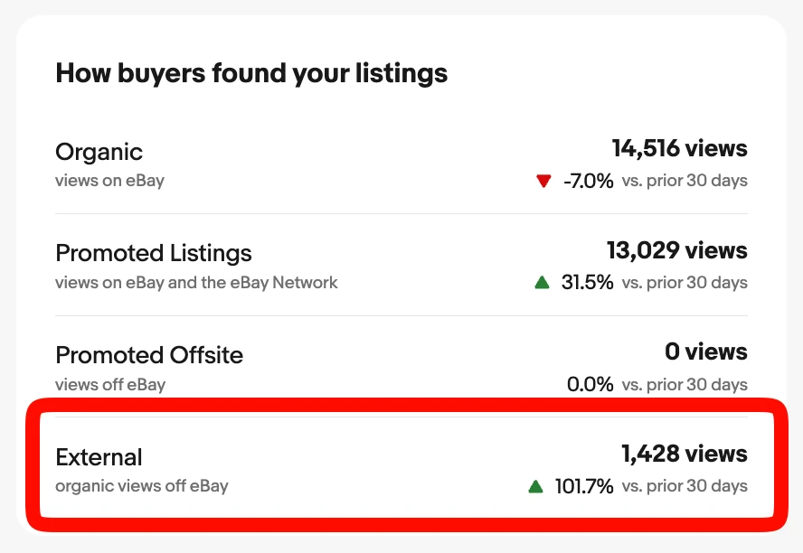

eBayの外からのアクセス(External)が、この30日で2倍になりました🐹
ぼくの店の商品ページの閲覧数(Listing views)は、3つの入口から来ています。
※検索結果に表示された回数ではなく、実際に商品ページが開かれた回数です。
・Organic(広告なし・eBayの中から)
・Promoted Listings(広告から)
・External(広告なし・eBayの外から)
このうちExternal(eBayの外)だけが、前の30日の+101.7%でした。
つまり2倍以上です。
何をしたのか。
どこまで分かって、どこから分からないのか。
正直に書きます。
数字

過去30日の閲覧数は、こうでした。
・Organic(広告なし・eBayの中から): 14,279(-8.5%)
・Promoted Listings(広告から): 12,845(+29.6%)
・External(広告なし・eBayの外から): 1,428(+101.7%)
数だけ見ると、Externalはまだ小さいです。
でも、増え方がほかと違います。
日別のグラフでは、9月19日ごろから水色の帯(External)が目に見えて太くなりました。
その直前に、やったこと
9月18日、受賞セラーを調べた結果をもとに、店をまとめて直しました。
・タイトル: 約1,800件を作り直した(意味のない「Japan」を外して、型番と用途の言葉へ)
・Item specifics(商品の項目): のべ約1,700件を増やした
・ブランド欄と型番欄: 中身とちがう値を直した
・メーカー純正ではない品の「純正」表記を外した
・カテゴリのずれを直した
グラフが動いたのは、その翌日からです。
eBayの外に出るかどうかは、2段階で決まる
ぼくは、こう感じていました。
「Item specificsを埋めたのが大きい気がする。」
eBayの外に出すかどうかを、eBayが決めている気がしてならない。
調べると、この見立てはeBay自身の説明と合っていました。
セラーハブの「Listing Quality Report(出品品質レポート)」に、こう書いてあります。
「eBayは、選ばれた、条件を満たす出品をGoogleに送り、Googleの商品広告として表示させる」
「一部の出品は、条件を満たさないためGoogleに弾かれる」
つまり、eBayの外に出るには2つの関門があります。
1. eBayが「Googleに送るか」を選ぶ
2. Googleが「受け取るか」を判定する
どちらも見ているのは、ブランド・型番などの商品の項目です。
弾かれていた6件
このレポートには「Google Shopping Rejections(Googleに弾かれた出品)」というタブがあります。
弾かれた出品があるときだけ、このタブが出てきます。
ぼくの店では、6件が弾かれていました。
理由は6件とも同じ。
「ブランドの値が不正」です。
中身を見ると、メーカーの別ブランド名や、全部大文字の表記でした。
人間が読めば同じメーカーだと分かります。
でも、Googleの判定には通じなかったようです。
6件とも、Googleの判定が分かるメーカー名に直しました。
タイトルの表記はそのまま残しています。
eBayの中の検索で、見つかりにくくならないようにです。
反映には最大2日かかる、とレポートに書いてあります。
数日後のレポートで、0件になったかを確かめます。
ついでに、項目の空きを埋めた
せっかくなので、出品中の全件の項目を点検しました。
いちばん多かったのは、Model(モデル)欄が空の出品です。
型番欄には値が入っているのに、Model欄だけ空いていました。
1,052件に、型番を入れました。
決めごとは、前回と同じです。
中身のある値しか入れない。
「該当なし」や、型番にならない一般的な単語は入れていません。
点検の途中で、重さが0で登録されている出品も見つかりました。
送料の計算にも関わるので、これから全件を調べます。
どれが効いたかは、分からない
ここは正直に書きます。
9月18日に、タイトル・カテゴリ・ブランド・型番・Item specificsを同時に直しました。
なので、どれが効いたのかは切り分けられません。
eBayの画面も「どのサイトから来たか」までは出しません。
Google以外の経路が混ざっている可能性もあります。
言えるのは、ここまでです。
・eBayの外に出るかは、商品の項目で決まる(eBayの説明に書いてある)
・項目が不正な出品は、実際に弾かれていた(6件)
・項目をまとめて直した翌日から、eBayの外からのアクセス(External)が伸びた
弾かれていないか見る。直す。数字で確かめる。
まとめ: いますぐ見られる場所
□ セラーハブで「Listing Quality Report」をダウンロードする
□ 「Google Shopping Rejections」タブがあるか見る(あれば、弾かれた出品がある)
□ 理由の多くはブランド欄。Googleが分かる会社名に直す
□ Model欄・型番欄の空きを埋める。中身のある値だけ
□ 反映は最大2日。数日後にもう一度レポートを見る
あなたの店は、Googleに弾かれていませんか?
台帳に書いておこう🐹
▼番外編: 受賞セラーを調べて、自分の店を直してみた結果
https://rental-space.net/articles/2026-09-22-ebay-award-seller-shop-fixes.html
▼まとめ: eBay有力セラーを7回調べてみた結果【まとめ】
https://rental-space.net/articles/2026-09-20-ebay-award-seller-summary.html
▼中の人🏠(レンタルスペース23部屋・売上1.5億)のレンスペ実録
https://note.com/rentalspace_kiku
▼ブログ(eBay×レンスペ、全記事まとめ)
https://rental-space.net
▼この店のやり方は、ぜんぶ1冊にまとめてあります
リサーチ・出品・値付け・顧客対応まで、初月利益10万4,286円を出した実店舗の記録と手順を全部書いた教科書です。
読んだその日から、AI社員の作り方をそのまま真似できます。
『AI × eBay輸出の教科書 — 梱包以外、ぜんぶAI』
https://rental-space.net/kyokasho/ebay/
販売価格は3部売れるごとに2,000円ずつ値上がりします（上限あり）。内容・最新価格は販売ページをご確認ください。